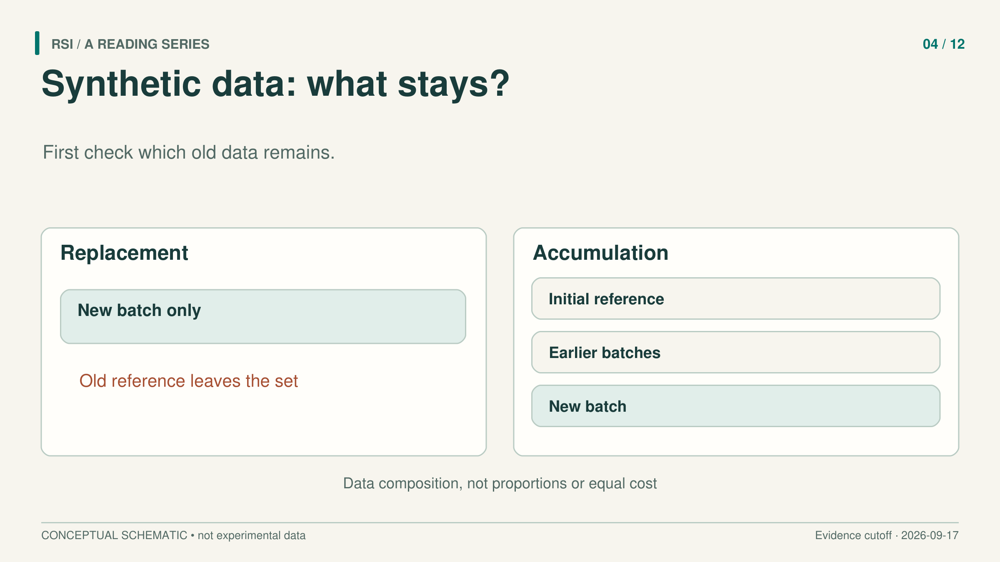
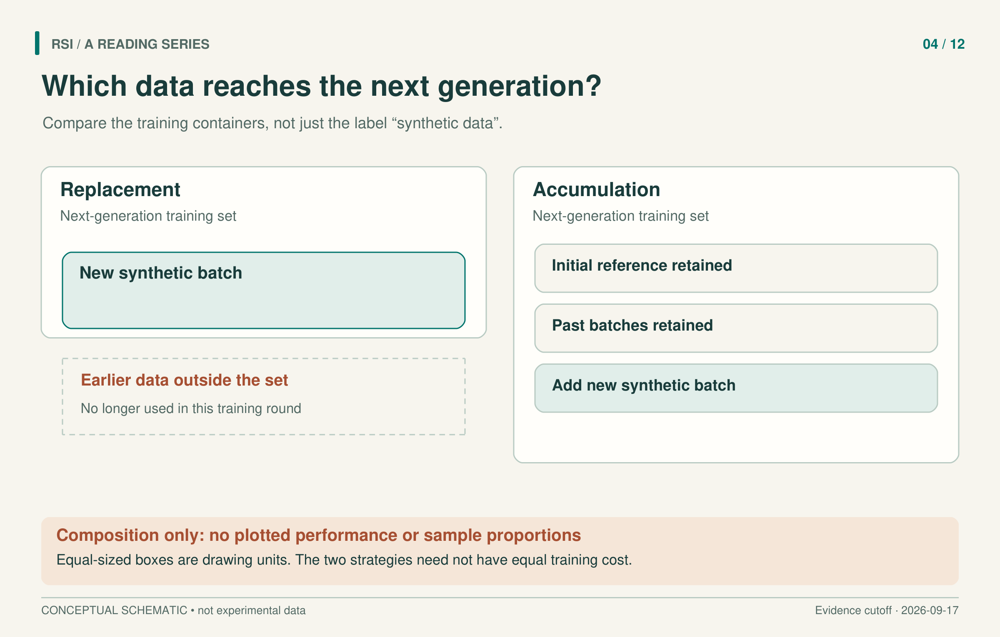

Before asking whether synthetic data will degrade a model, ask which data the next model can still see. Training only on the latest generated batch and training on an expanding archive are different feedback processes. “The model learns from its own output” does not specify which one is running.
This distinction explains why collapse results and accumulation results can coexist. They examine different ways of passing information between generations. To use either result, we need to preserve the data recipe, the metric, and the compute budget that made it meaningful.

First inspect what remains in the training set.
A small archive thought experiment
Imagine an archive containing many common examples and a few unusual ones. A model learns from the archive and generates a new collection. Some unusual examples might not appear in that finite collection. If we discard the old archive, the next model has no direct access to those omitted examples through its training set.
If we retain the archive and add the generated collection, those examples remain available. That does not guarantee the training procedure will use them effectively. It changes what information the procedure can access.
This is an illustrative example, not a measured trajectory or a claim that every generation must lose a fixed fraction of rare events. It identifies a decision we can inspect: does a new synthetic batch replace the earlier data, or join it?
What a collapse experiment establishes
Shumailov and colleagues study how recursive use of generated data can lose information about the original distribution. In the language-model experiment considered here, each generation starts from pretrained OPT-125M and is fine-tuned again. It does not simply continue training the preceding generation's weights.
Generation uses a 64-token prefix from the original text and predicts the next 64 tokens with five-way beam search. An equally sized generated dataset trains the successor. Evaluation uses the original WikiText2 test set, with five independent runs.
The descendants perform worse than the initial model fine-tuned on original data. However, the displayed first through ninth generations do not worsen monotonically. A later generation can improve relative to its immediate predecessor while still remaining worse than the original reference. Saying “every generation gets worse” would turn an observed degradation into a stronger claim the trajectory does not support.
The paper also considers retaining 10% original data, where degradation is smaller. But that setup uses ten training epochs rather than five. An epoch is one pass through the training dataset. Because both retention and training change, their effects cannot be completely separated in that comparison. Nor should the paper be described as studying only pure replacement. Source
These details matter when connecting collapse to other self-training methods. Filtering generated reasoning by known answers adds a selection signal. Checking programs by execution adds another. A recursive text-generation experiment does not automatically characterize either process.
Keep the archive and the experiment changes
Gerstgrasser and colleagues explicitly investigate the distinction between replacement and accumulation. In the accumulation recipe, the initial reference and earlier synthetic batches remain in the dataset as a new batch arrives. Data persists across generations; each model is freshly initialized.
In five-generation TinyStories experiments with small GPT-2 and Llama2 models, replacement increases test cross-entropy, while accumulation keeps it level or reduces it. Cross-entropy measures how well the model predicts the test text; lower values are better for that metric. These are finite experiments on small models, not an unlimited-generation guarantee.
The initial TinyStories reference itself was generated by GPT-3.5 and GPT-4. In this setting, “real” means the initial reference distribution relative to the descendants. Rewriting that as “human-written data” would misidentify the source of the information being preserved.

The boxes show data composition, not sample proportions, measured performance, or equal compute cost.
Training also becomes more expensive under accumulation. If each generation trains for one epoch, a larger archive requires more gradient steps. The paper includes an additional control that enlarges purely synthetic data, but accumulation itself should not be presented as a free improvement at matched compute. The unit of comparison must be stated.
Why a bounded-error theorem needs its assumptions
The accumulation paper also gives a linear-regression example where the error can be calculated. Its purpose is to explain one mechanism that controls error propagation, rather than to certify every neural training loop.
The setup has input dimension d and T examples per added batch. The T rows of the initial input matrix X are drawn independently from N(0, I_d): zero-mean Gaussian vectors with identity covariance. Every later generation reuses exactly that matrix. Initial labels follow the true linear relationship plus Gaussian noise. Later labels come from the preceding model's predictions plus new Gaussian noise. All label noise has zero mean and variance sigma².
Noise is independent across samples and rounds, and independent of X. The initial data is permanently retained, and each model uses unregularized least squares. This is not a process that receives fresh true labels every round.
Evaluate an independent test draw from the original true linear distribution, averaging over the training data and noise. Under these conditions, with T ≥ d + 2, define:
C = sigma² × d / (T − d − 1)
After n rounds, expected excess test mean squared error is:
E_excess(n) = C × (1 + 1/2² + … + 1/n²) ≤ C × π²/6
“Excess” means the irreducible noise variance has been subtracted, so this is not total test error. Round one is the initial fit; round n includes n − 1 successor generations. The squared reciprocal terms have a finite sum, which yields the bound. Theorem and setup
The formula's ingredients are doing work. Reusing X, retaining the original observations, independent Gaussian noise, and the fitting rule all belong to the result. Changing the input distribution, sample weights, or learning procedure requires another argument. The theorem cannot be transferred directly to a neural network merely because its training folder keeps growing.
Stable error and preserved detail are different goals
The same paper acknowledges slower error growth and loss of detail in its variational-autoencoder experiments under accumulation. Its discussion of avoiding collapse concerns whether error keeps deteriorating without bound under the chosen definition. That is different from preserving every property of the original distribution forever.
A practical evaluation should therefore name both the data policy and the desired outcome. Record which initial and generated batches each generation sees. Record retention proportions and sampling methods as part of the recipe. Compare compute as well as epoch counts. Evaluate against a retained reference and inspect the kinds of examples whose preservation matters, rather than relying on one average alone.
For example, if the archive contains rare technical cases that matter to the application, evaluate those cases explicitly. An average prediction score answers an average question. It does not by itself tell us whether the rare cases remain learnable or whether a later task can use them. State that preservation goal before choosing the metric, so the evaluation can distinguish the outcomes that matter.
These are experimental suggestions drawn from the comparison, not a guarantee that any particular recipe will succeed. Synthetic origin alone cannot tell us whether a loop corrects errors, recycles them, or loses access to information. The first useful question is what the next generation is allowed to forget.
Sources
- Shumailov et al., The Curse of Recursion: Training on Generated Data Makes Models Forget, v3, 2024.
- Gerstgrasser et al., Is Model Collapse Inevitable? Breaking the Curse of Recursion by Accumulating Real and Synthetic Data, v2, 2024.
This article adapts a book with a literature cutoff of September 17, 2026. Experimental results are reported by the cited papers; this series did not rerun the experiments.